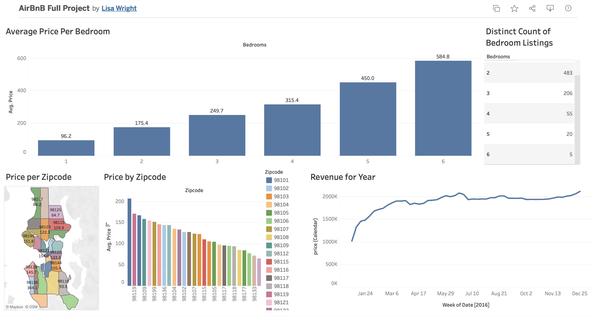

Using MySQL, I cleaned and prepared a real-world layoffs dataset by building staging tables and systematically improving data quality. I removed duplicate records using ROW_NUMBER() and CTEs, standardized inconsistent text and categorical values, reformatted date fields, resolved null and blank entries, and optimized column structures — producing an analysis-ready dataset with strong integrity for downstream reporting and exploratory analysis.


Building on the cleaned layoffs dataset, I performed exploratory data analysis in MySQL to surface trends and patterns. I analyzed total and percentage layoffs by company, industry, and country, then examined shifts over time using monthly and yearly aggregations. Techniques included GROUP BY, CTEs, window functions, rolling totals, and ranking functions — revealing which sectors and companies experienced the steepest workforce reductions year over year.

My Tableau Public portfolio features interactive dashboards built from real-world datasets, with an emphasis on exploratory analysis, trend identification, and translating raw data into clear business insights. New dashboards are added as I complete projects, reflecting continued growth in data visualization and storytelling.